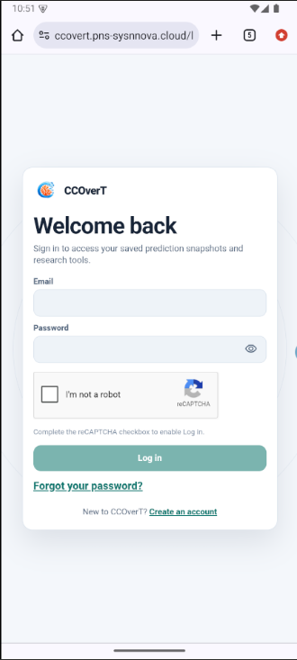
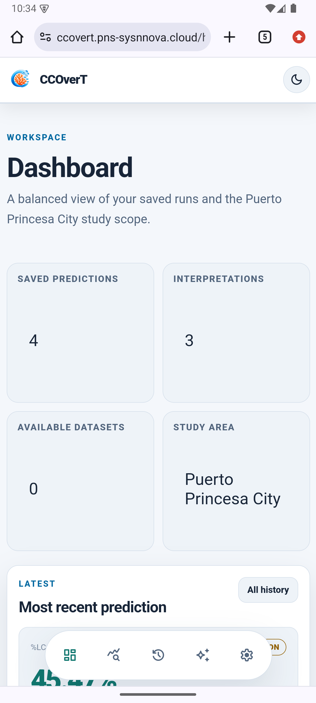

Client workspace
Runs authorized predictions, reviews annual outputs and computation details, views personal history, and creates evidence-based reports.
System reference · 2026
Internal design, application programming interfaces, services, and operational controls for the CCOverT coral-cover research workspace.
Research workspace for Puerto Princesa City, Palawan. Users can explore prediction history and reports; researchers manage the shared model configuration; developers operate account and service controls.
01 · Internal Design
CCOverT separates the browser experience, authenticated application API, numerical model boundary, and persistent storage. The browser calls the Express API under /api/v1. The Python model service is an internal service and is not exposed to the browser.
Runs authorized predictions, reviews annual outputs and computation details, views personal history, and creates evidence-based reports.
Maintains one active shared model configuration. Parameter changes require a source or rationale and are used by later client predictions.
Manages accounts, system announcement, email configuration, backups, and operational status. Secret values are not displayed.
FastAPI owns numerical calculations. Prediction records retain their input, model version, source coverage, warnings, and year-by-year computation values.
02 · Application Programming Interfaces (API)
Base path: /api/v1. Requests use JSON unless a route accepts a multipart file. Session-authenticated browser requests include the HttpOnly session cookie. Mutations also apply same-origin checks.
| Area | Routes | Purpose / access |
|---|---|---|
| Authentication | POST /auth/signup, /auth/verify, /auth/login, /auth/logout, /auth/forgot-password, /auth/reset-password; GET /auth/me | Account creation and verification, session lifecycle, password recovery, current user. |
| Predictions | POST /predictions; GET /predictions, /predictions/:id, /predictions/:id/download, /predictions/:id/reports | Verified user runs; owned records and downloads in Markdown, CSV, or JSON. Supports Idempotency-Key. |
| Model | GET /model/status, /conditions, /parameters, /versions; PUT /model/configuration; version review/activation routes | Read model readiness and parameter values; researcher changes shared configuration; role checks apply to writes. |
| Data imports | GET /data-imports, /schema/:kind; POST /data-imports, /:id/estimate-g | Researcher-owned sourced SST, tourism, and coral-cover data; admin reviews as configured. |
| AI reports and uploads | GET /ai/status, GET/POST /ai/reports; GET/POST/DELETE /uploads | Reports from selected authorized evidence; private user uploads with bounded formats and size. |
| Settings and operations | PATCH /settings; GET /developer/status, PATCH /developer/config, PATCH /developer/smtp, account and backup routes | User preferences; admin-only operational configuration, account administration, and backups. |
Validation failures use HTTP 400; oversized uploads use 413; rate limits use 429. Errors include a stable code, message, optional details, and request ID. A prediction is not stored when the request is refused or model execution fails. A repeated idempotency key with a changed body returns a conflict.
x-service-token header except health probes; it is not part of the public browser API.03 · Services
| Service | Technology | Responsibility and boundary |
|---|---|---|
| Web | React, TypeScript, Vite, Nginx | Public landing, sign-in, and responsive client/researcher/developer screens. Container listens on port 80; Compose binds host port 8088 to loopback by default. |
| API | Node.js, Express | Authentication, authorization, validation, persistence, prediction orchestration, report generation, and operational routes. Container listens on port 4000. |
| Model | Python, FastAPI | Numerical calculation, model validation and calibration. Container listens on port 8000 on the private backend network. |
| Database | MongoDB 7 | Users, configuration versions, predictions, source records, reports, and other application state. Compose attaches a persistent named volume. |
| Configured SMTP provider | Verification and password recovery messages. Production credentials stay in environment configuration. | |
| Optional providers | AI and environmental integrations | Can provide evidence interpretation or environmental data. AI cannot change numerical prediction output; deterministic reports are used when no provider is configured. |
The API exposes /health, /ready, and admin-protected /metrics. The model exposes /health and /ready. Container health checks gate startup dependencies for the local Compose stack.
The Compose file places MongoDB and the model service on an internal backend network. The API connects to both networks; only the web container publishes a loopback-bound host port by default. Production proxy and domain routing are deployment-specific.
04 · Controls
Session cookie is HttpOnly. Email verification gates prediction and evidence features for client accounts. Password reset tokens are single use and responses do not reveal whether an email exists.
Client, researcher, and admin routes apply server-side role checks. The server derives the account from the session; it does not trust a client-supplied user ID.
Prediction, upload, dataset, and report reads and updates are scoped to the authenticated user or authorized role. Upload bytes are private and are not served by the web app.
Schema validation, same-origin checks for mutations, rate limits, bounded JSON and file sizes, password controls, and idempotent prediction submissions reduce accidental or unauthorized changes.
Each saved run records its input snapshot, configuration version, source records, equation/model versions, warnings, and annual computation decomposition. Assumptions are labeled and remain unreviewed.
Session, model, SMTP, CAPTCHA, and provider secrets are environment-managed. Admin backup actions and verification are available; operational secrets are not exposed in the UI.
Use .env.example as the variable inventory. Production requires HTTPS origins, a strong session secret, a model service token, persistent database configuration, and non-production demo settings disabled. Keep live credentials in a deployment secret store or ignored environment file.
05 · Interface Inventory
This inventory is taken from the web application's route definitions. “Not captured” means this documentation has no verified mobile emulator screenshot for that route.
| Interface | Route | Access | Mobile capture |
|---|---|---|---|
| Public landing | / | Public | Deployed Android emulator |
| Sign up | /signup | Public | Not captured |
| Log in | /login | Public | Prior local capture only |
| Email verification | /verify | Public, token flow | Not captured |
| Forgot password | /forgot-password | Public | Not captured |
| Reset password | /reset-password | Public, token flow | Not captured |
| Role home (dashboard) | /home | Signed in | Deployed Android emulator |
| Prediction | /predict | Verified account | Not captured |
| History | /history | Verified account | Not captured |
| Model configuration | /model | Researcher | Not captured |
| Researcher workspace | /researcher | Researcher | Not captured |
| Developer controls | /developer | Admin | Not captured |
| AI reports | /ai | Verified account | Not captured |
| Settings | /settings | Signed in | Not captured |
| Guide and FAQ | /guide | Signed in | Not captured |
06 · Mobile Screenshots
The deployed public landing page was captured in the Android emulator at 1224 × 2720 pixels, 440 dpi. The sign-in screenshot below is from the earlier local capture at a 480 × 900 CSS-pixel viewport. Authenticated and remaining account pages still need emulator captures.

Capture status: deployed landing page verified. The emulator route-navigation action was blocked by automatic review, so this edition does not claim complete deployed screenshots for authenticated interfaces, sign-up, or password reset.
07 · Mobile Screenshot
Captured from the deployed site in the Android emulator at 1224 × 2720 pixels, 440 dpi. The active session was already signed in when captured.
